Mes projets
Cette section présente une sélection de projets réalisés au cours de mon parcours en Génie Industriel et Logistique. Elle met en avant les expériences les plus représentatives de mes compétences en Supply Chain, amélioration continue, digitalisation et analyse de données.
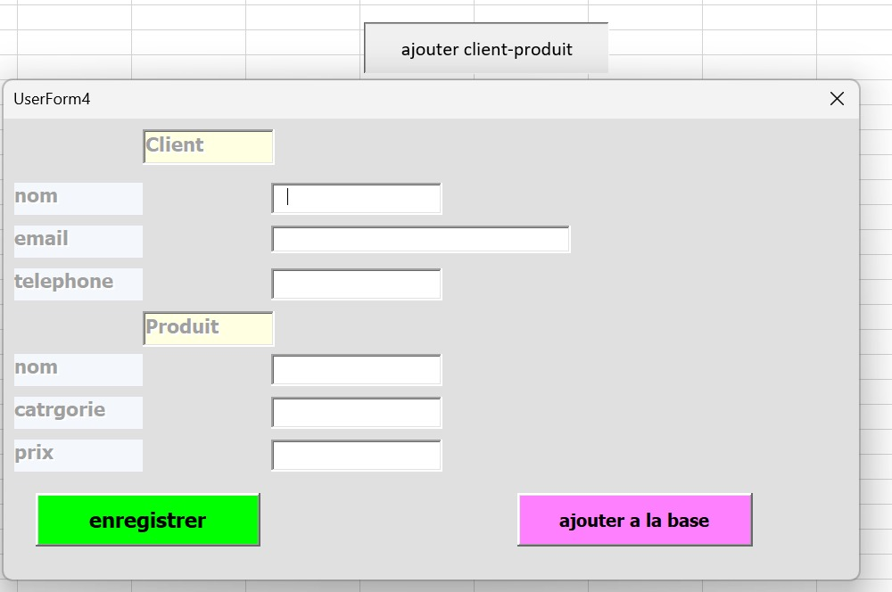
Développement d'un système de gestion des commandes
Automatisation de la saisie et du stockage des informations clients et produits via une interface Excel VBA connectée à une base de données SQL.
Contexte et objectif
Dans un processus de gestion des commandes, la saisie manuelle des données clients et produits est souvent source d'erreurs et de perte de temps. L'objectif de ce projet est donc de concevoir un outil simple et fiable permettant de centraliser ces informations, tout en réduisant les tâches répétitives.
Fonctionnement
- Un formulaire (UserForm) développé en VBA Excel permet à l'utilisateur de saisir les informations d'un client (nom, contact, adresse...) et d'une commande (produit, quantité, prix...)
- Une connexion ODBC (Open Database Connectivity) relie Excel à une base de données MySQL
- Dès validation du formulaire, les données sont automatiquement transférées et enregistrées dans la base SQL, sans intervention manuelle supplémentaire
Compétences et outils utilisés
- VBA Excel : conception du formulaire (UserForm), programmation des événements et validation des champs
- ODBC : configuration de la connexion entre Excel et MySQL
- MySQL : structuration et gestion de la base de données (tables clients, produits, commandes)
- Logique de gestion de données et automatisation de processus
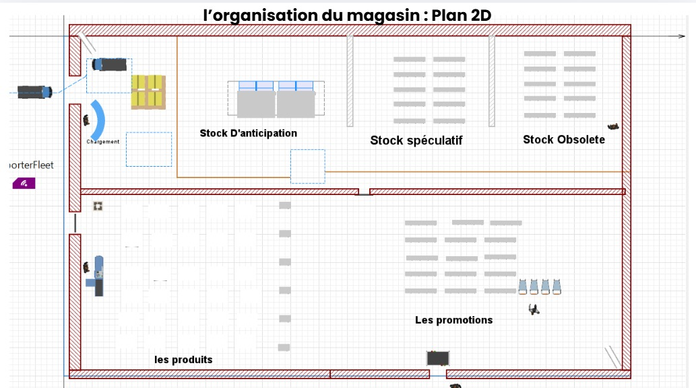
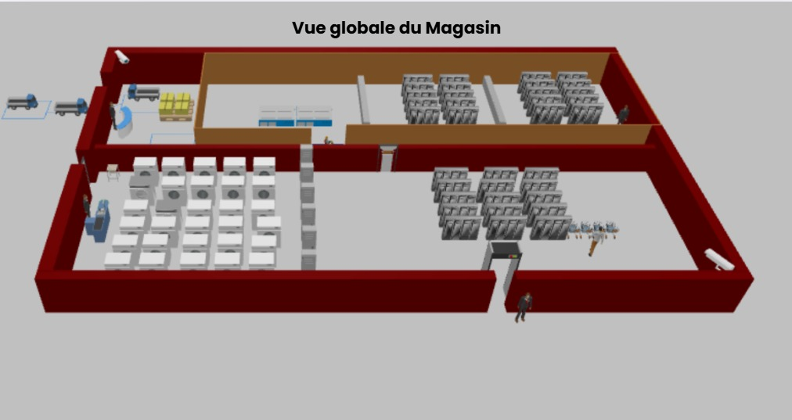
Simulation d'un entrepôt logistique (2D & 3D)
Simulation 2D et 3D d'un entrepôt d'une entreprise d'électroménager intégrant les flux logistiques (camions, marchandises et zones de stockage). Mise en œuvre de différentes stratégies de gestion des stocks (stock d'anticipation, stock spéculatif et stock obsolète) afin d'optimiser l'organisation des flux, le stockage et les opérations logistiques.
Compétences développées
- Modélisation et simulation des flux logistiques
- Gestion et optimisation des stocks
- Organisation des espaces de stockage
- Analyse des performances d'un entrepôt
Outils
- AnyLogic : simulation des flux et des stratégies de stock
- AutoCAD : conception du plan 2D
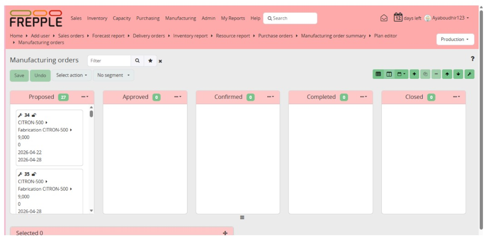
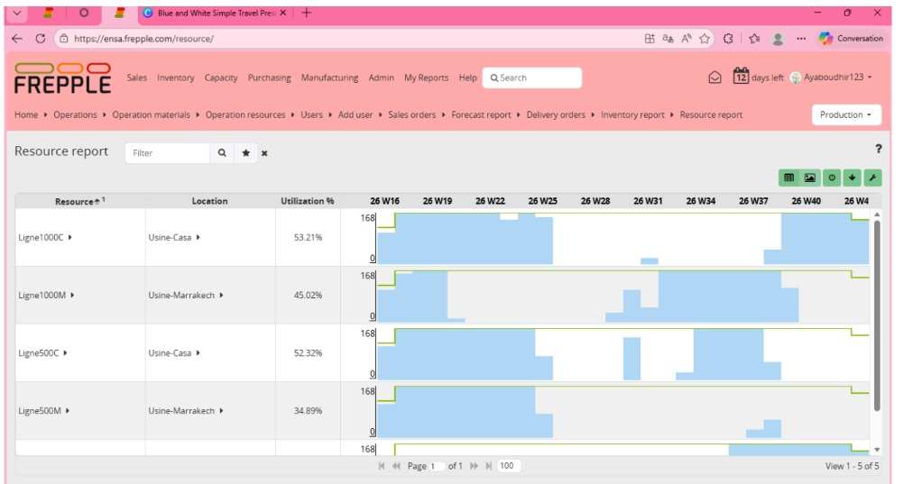
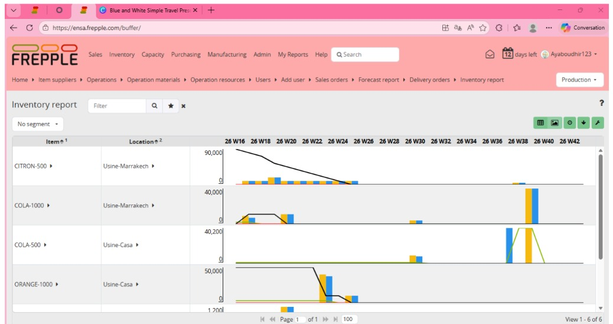
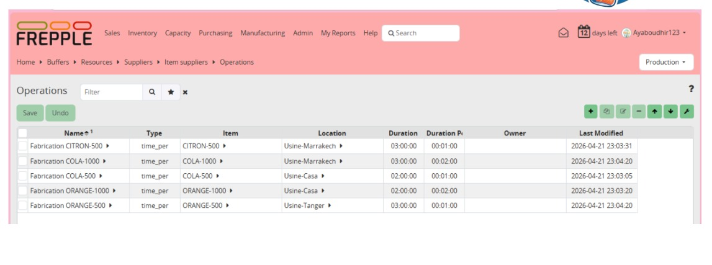
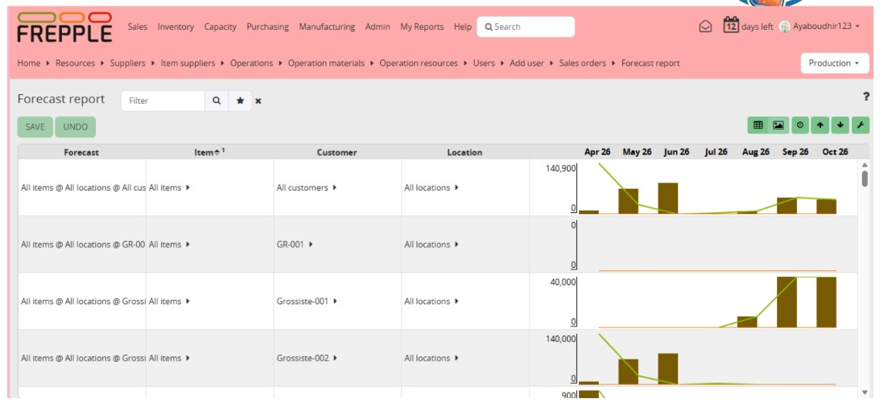
Optimisation de la planification de la production avec FrePPLe (APS)
Conception d'un système de planification avancée (APS) pour une entreprise de boissons gazeuses (CBGS) à l'aide de FrePPLe, afin d'optimiser la production, les approvisionnements et les livraisons en fonction de la demande client.
Réalisations
- Planification automatique des ordres de fabrication selon les commandes clients
- Optimisation de l'utilisation des lignes d'embouteillage et des capacités de production
- Gestion des approvisionnements en matières premières pour assurer la continuité de la production
- Détection des retards potentiels et optimisation des délais de livraison
- Suivi des commandes clients (statuts, priorités et délais)
- Élaboration de tableaux de bord et de rapports sur les prévisions de la demande, les stocks, les ordres de livraison et le taux d'utilisation des lignes de production
- Visualisation du planning de production à l'aide d'un diagramme de Gantt interactif et pilotage des ordres de fabrication par cartes Kanban
Outil
- FrePPLe : Advanced Planning and Scheduling (APS)
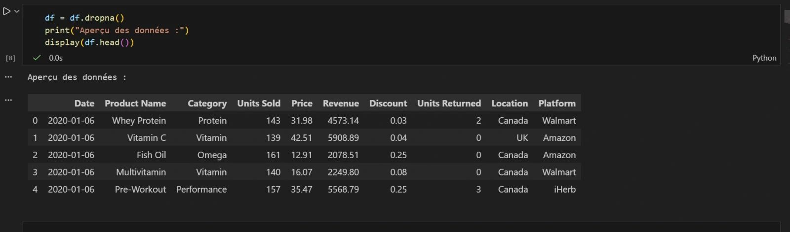
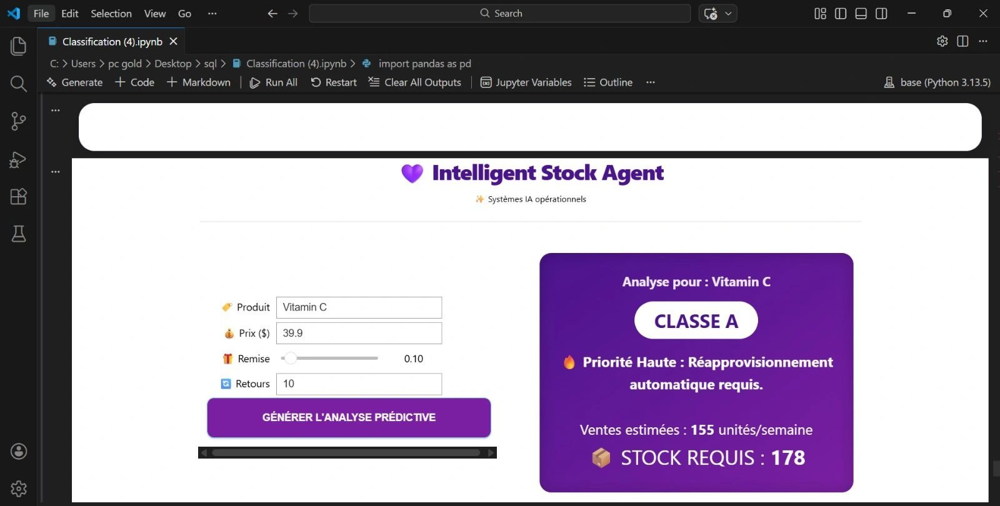
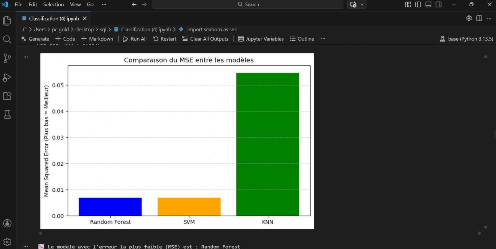
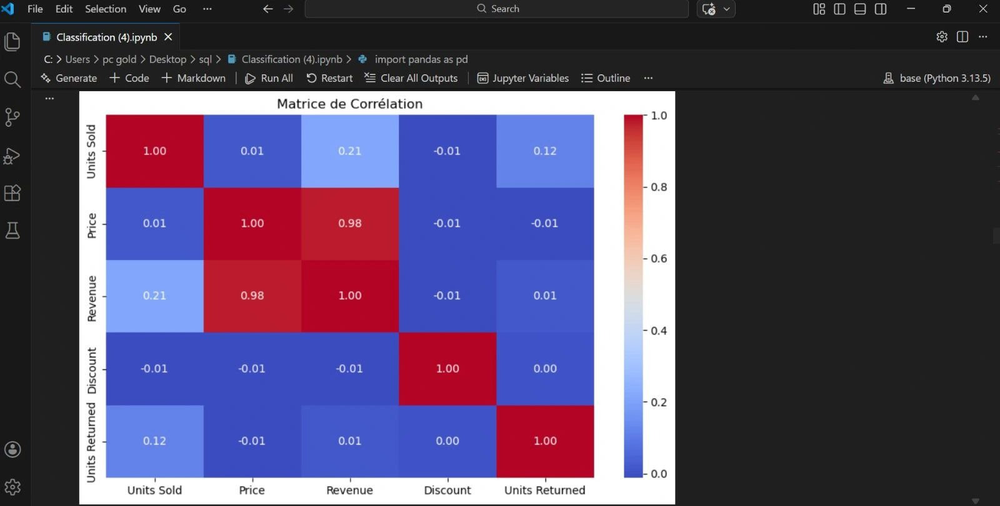
Système intelligent de gestion des stocks basé sur l'analyse ABC et le Machine Learning
Conception d'un système intelligent d'aide à la décision pour la gestion des stocks, combinant l'analyse ABC (méthode de Pareto), le Machine Learning et la prévision de la demande afin d'optimiser les politiques de stockage et d'approvisionnement.
Réalisations
- Automatisation de la méthode ABC (Pareto 80/20) pour classifier dynamiquement les produits selon leur contribution au chiffre d'affaires
- Développement et comparaison de plusieurs modèles de Machine Learning (Random Forest, SVM et KNN) pour la classification des produits ; obtention d'une précision de 99 % avec Random Forest
- Intégration d'un modèle de prévision de la demande (Time Series Forecasting) afin d'anticiper les besoins futurs et d'améliorer la planification des approvisionnements
- Développement d'un simulateur interactif permettant d'évaluer l'impact des variations de prix, des remises et des volumes de vente sur le chiffre d'affaires et les niveaux de stock
- Mise en place d'un outil d'aide à la décision visant à réduire les ruptures de stock, optimiser les coûts de stockage et améliorer la gestion des stocks
Outils & technologies
- Python, Scikit-learn, Pandas
- Jupyter Notebook & Jupyter Widgets
- Random Forest, SVM, KNN
- Time Series Forecasting